LiDAR range view
按光束与方位角组织距离、强度及回波有效性，建立传感器坐标系下的二维表示。
1 Hangzhou Dianzi University (hdu.edu.cn)2 Carizon (carizon.com)3 Beihang University (buaa.edu.cn)
Download PDF · 论文暂未提供
LiFTeR / LiDARGen
Technical Overview
以六视角相机为条件，通过多视角 DiT 在联合潜空间生成 LiDAR latent；再由高斯解码器预测逐射线 2D Gaussian，并渲染距离、强度与回波属性。
项目演示视频占位 · 可在 media.js 中配置
PROBLEM FORMULATION
目标：以相机观测为条件，生成具备 LiDAR 几何与回波属性的场景表示。
逐场景重建通常依赖目标场景的真实 LiDAR 和场景级优化；直接生成点云或距离图则不天然具备连续场景表示。LiFTeR 的研究思路是在相机条件生成之后引入前馈高斯解码，将潜空间表征映射为可渲染的逐射线 Gaussian，目标是减少逐场景优化并探索新场景与新位姿。
当前 LiDARGen 代码主要覆盖六相机条件扩散及 nuScenes 单帧 2DGS 渲染。更广的 LiDAR 条件输入、新位姿仿真和多帧能力属于研究目标或扩展分支，不能直接等同于当前主 CLI 已验证支持的功能。

按光束与方位角组织距离、强度及回波有效性，建立传感器坐标系下的二维表示。
利用相机条件、多视角 DiT 与 EDM 噪声调度学习 LiDAR 潜变量的条件分布。
由潜变量预测高斯几何与传感器属性，经可微渲染得到距离、强度与 raydrop。
TWO-STAGE FRAMEWORK
Stage I · Multi-view DiT
Stage II · Gaussian decoder
训练时分别以冻结的图像 VAE 和 LiDAR VAE 编码相机图像与距离图，再将各自 latent 对齐到联合画布。Stage I 通过条件扩散预测 LiDAR latent；Stage II 将该 latent 映射为逐射线 2D Gaussian，结合传感器几何进行渲染。直接 VAE 解码是另一条输出路径。
6 × RGB cameras
Visual latent
Conditional EDM
迭代去噪Range view → 点云
Range · Intensity · Raydrop
冻结 VAE 编码；将 LiDAR 放在槽 0，六路相机放在槽 1–6，空间不足的区域以零填充。
视角编码区分传感器，位置编码标记空间位置；通过 self-attention 学习跨视角特征关联。
高斯解码器结合双向 Mamba-2 与自注意力，预测深度、尺度、旋转、不透明度及回波属性。
以 nuScenes 单帧扩散与 V13 Gaussian 训练为例。
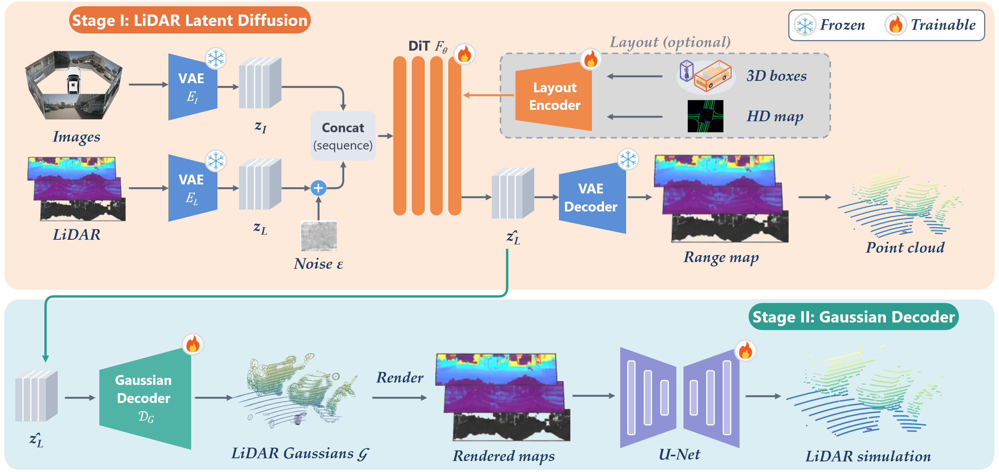
真实 LiDAR → range / intensity → 冻结 LiDAR VAE → 联合 latent 的目标槽；预训练初始化后更新 DiT。
默认冻结 DiT 与 VAE，训练高斯头；可选 raydrop UNet 可用于训练/固定验证路径，非单帧主 CLI 当前必经模块。
以 nuScenes RangeLDM 单帧配置为例；尺寸顺序为 [B, C, T, H, W]。
| 模态 | 输入 | 编码结果 | 联合画布位置 |
|---|---|---|---|
| RGB × 6 | [B, 3, 6, 704, 1280] | [B, 16, 6, 88, 160] | 槽 1–6，作为条件 |
| LiDAR | [B, 2, 1, 32, 1024] | [B, 4, 1, 8, 256]固定复制到 16 通道 | 槽 0，作为生成目标 |
| Joint latent | [B, 16, 7, 88, 256] | 各槽左上对齐，其他位置零填充 | |
窄屏可横向滚动查看完整表格。LiDAR 的 4→16 通道转换为固定重复，解码时对每组 4 通道求均值，并非可学习投影。Carizon 使用不同的 LiDAR tokenizer 与分辨率，不能套用此表。
冻结 tokenizer，训练多视角扩散 Transformer。
LiDAR 槽为待预测区域，六个相机槽提供条件。DiT 使用 3D RoPE、可学习视角嵌入与 self-attention 进行跨视角信息交互；默认主链不依赖显式相机到 LiDAR 的像素投影。
训练抽取不同噪声水平并预测干净 latent；nuScenes 对真实 LiDAR latent 区域和结构 padding 分别归一化。推理从高斯噪声出发，使用 EDM/RES 迭代求解；默认 2ab、35 步，并在末尾执行 clean denoise。
论文将 HD 地图和 3D 框转换到 LiDAR 射线网格，通过残差适配器注入 LiDAR token；3D 框还编码为 cross-attention 条件。布局功能依赖相应数据与配置。
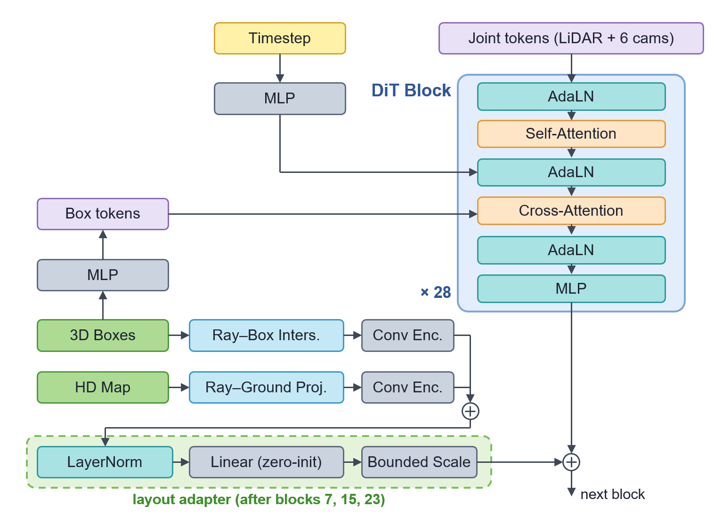
xσ = x0 + σ ε · ε ∼ N(0, I)模型根据噪声水平与相机条件预测 x0；实现还使用 EDM 预条件化和按噪声水平加权的损失。
DiT 使用 Cosmos Predict 预训练权重初始化后进行相机到 LiDAR 训练。推理主链的 batch 目前仍读取并编码 LiDAR video 以构造画布和评估数据；标准生成的 LiDAR 槽由噪声驱动，而非直接复制真实 LiDAR latent。纯相机部署仍需适配数据接口。
以下为 nuScenes V13 单帧 2DGS 路径。
输入 [B, 16, 1, 8, 256]，经 2×2 patch 转为 512 个 token；16 层主干混合双向 Mamba-2 与 Transformer，再上采样到 32×1024 光束网格。
每条光束预测 12 个值：深度、4 个属性、2 个切向尺度、4 元数与不透明度。固定法向厚度适配 2DGS 接口；渲染后按 raydrop 概率得到稀疏回波，并根据光束方向回投点云。

输出每光束 1 个 2D Gaussian：深度、4 个直接属性、2 个切向尺度、四元数与 opacity。多帧时间/位姿条件不属于此单帧图。
μ = oray + d · rray高斯中心位于对应光束上；oray 是射线原点，rray 是单位方向，d 是预测距离。
训练默认冻结 DiT 与 VAE，只训练 Gaussian 头；无缓存时使用单步去噪 latent，推理使用多步采样 latent。监督包括距离、强度、raydrop 及几何项，真实回波 mask 与邻域补值 mask 需要区分。
区分当前接口与研究扩展。
当前主链的标准流程；数据接口仍需 LiDAR 字段构造画布与评估数据。可选 layout 依赖数据集及相应配置。
非跨模态研究路径；当前工程存在 clean-latent 训练/诊断代码，但不能据此认为主 CLI 已提供独立的 LiDAR 输入推理入口。

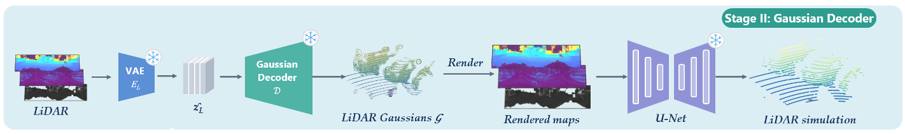
多帧 V13.1 使用相邻时刻缓存 latent、时间和相对位姿预测目标视角；默认帧权重配置与主 CLI 接线仍需验证。V13.2 world-scene 配置未注册。任意新位姿仿真目标不应直接视为当前单帧路径已验证的能力。
EXPERIMENTAL RESULTS
项目材料中的实验，
以案例展示不同评估任务。
以上为项目材料报告的结果，并非本次独立复现；数据集划分、比较基线、硬件与计时边界、评估公式及统计口径待补充。公开引用前请先核验。
展示生成质量与重建评估。
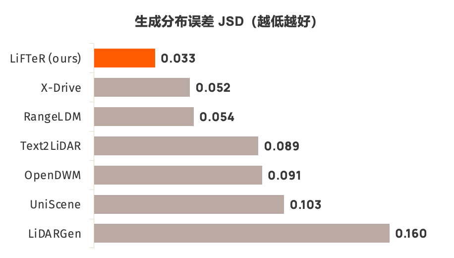
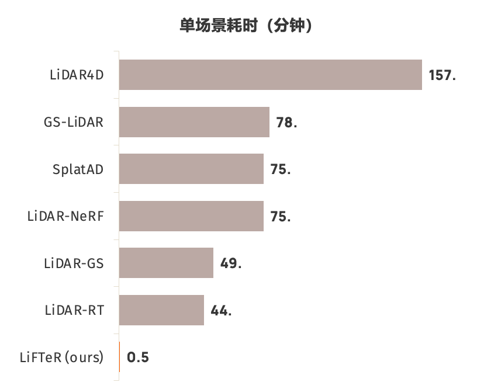

以上对比图为提供的素材，实验结果未经本次独立复现；基线、数据集划分和评估口径需在公开引用前核验。
| 实验与输入 | 单场景时间 | 深度 PSNR |
|---|---|---|
| 同帧评估 · 相机输入 | 3 分钟 | 17.21 dB |
| 新视角 · 相机输入（C→L） | 18 分钟 | 16.04 dB |
| 新视角 · LiDAR 输入（L→L） | 0.5 分钟 | 16.67 dB |
表中为论文手稿在不同任务和输入下报告的结果；0.5 分钟及 16.67 dB 属于 LiDAR 输入的新视角实验，不应归因于纯相机生成。论文以端到端推理时间对比逐场景方法的优化时间，具体硬件和计时范围仍需核验。
论文将文本、布局和相机条件生成方法并列比较；不同方法的条件输入并不相同。
同一测试帧：LiFTeR 使用相机，逐场景方法使用其余帧的真实 LiDAR 优化；红框为材料中的关注区域。
论文使用相邻训练帧多帧推理；C→L 为相机条件，L→L 为 LiDAR 输入。研究结果不等同于当前单帧 CLI 已验证能力。
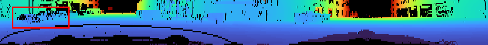

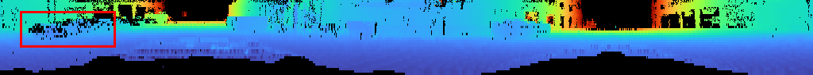


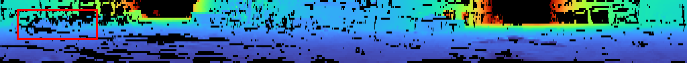


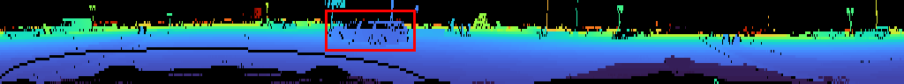
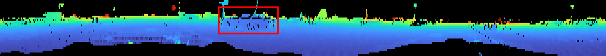

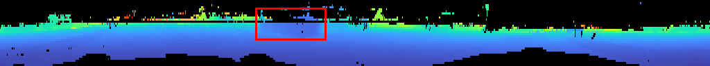

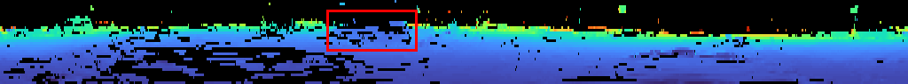


同一个生成场在不同位姿渲染，不重新生成场景。
从单个参考关键帧生成高斯场，在后续传感器位姿渲染，比较参考距离图与预测距离图；论文使用动态物体运动较少的场景。图表对比同一 latent 的高斯场渲染与距离图重投影。

论文对比真实点云、完整 2DGS 模型及替换为 3DGS 的结果；仅为该实验条件下的定性对比。
论文描述四个 LiDAR 的点云融合后投影到 128 × 1792 距离图；素材中两组实车案例按文件分组，未推断天气标签。
六路图像叠加生成点云；下方比较同一案例的真实与生成距离图、点云。相机编号沿用素材文件名。


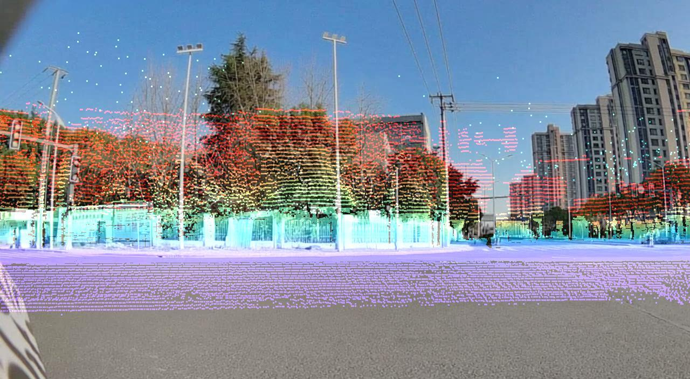

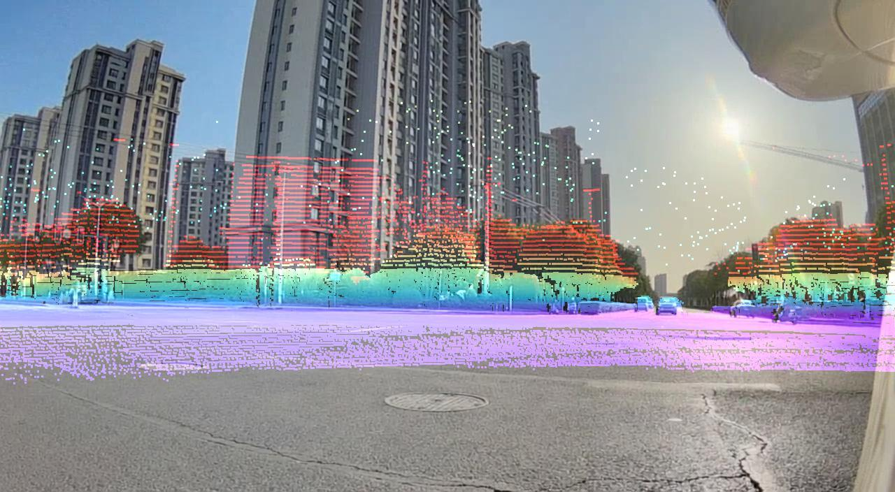
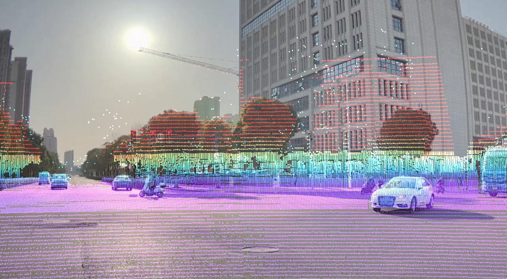
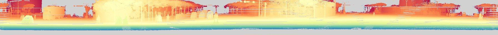


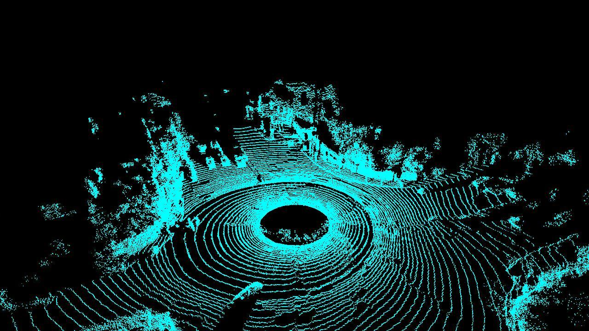
六路图像叠加生成点云；下方比较同一案例的真实与生成距离图、点云。相机编号沿用素材文件名。
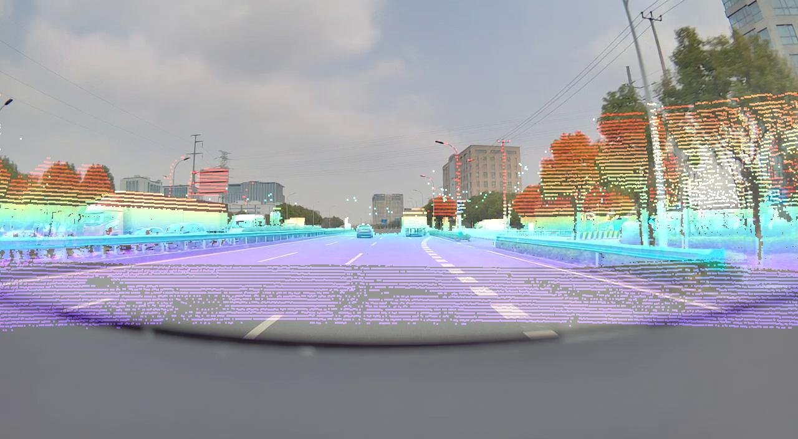


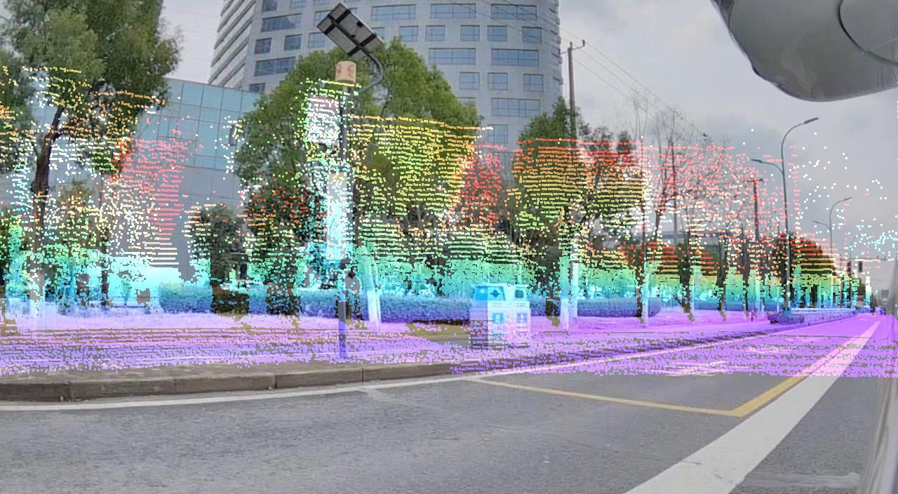


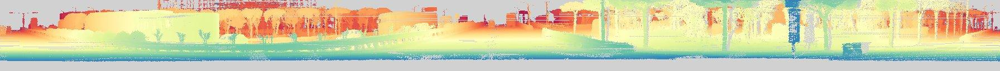

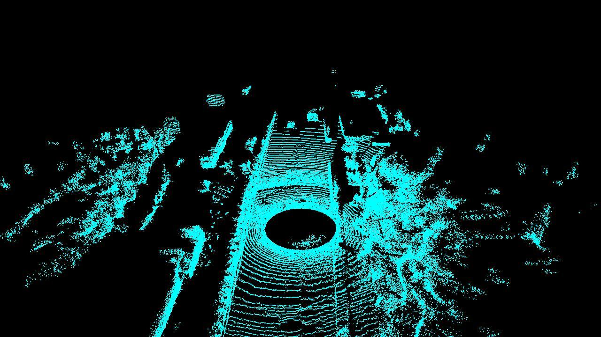
论文将未微调的 CenterPoint 用于真实与生成点云，并将点和预测框投影到前视图；此处为定性展示。
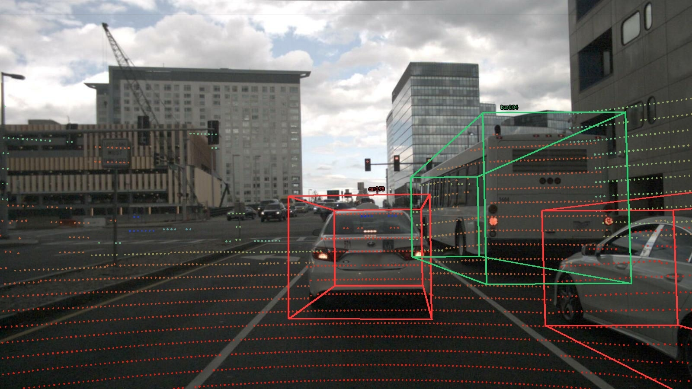


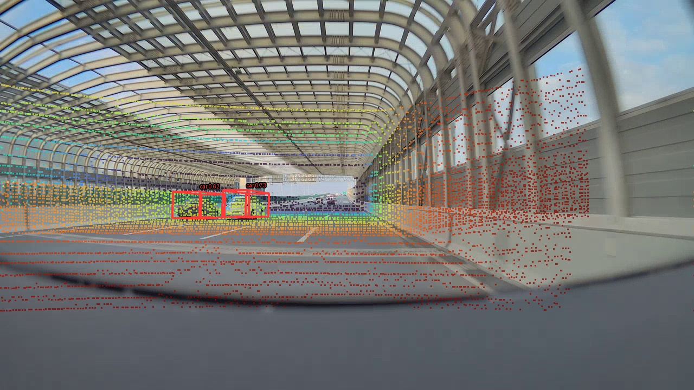

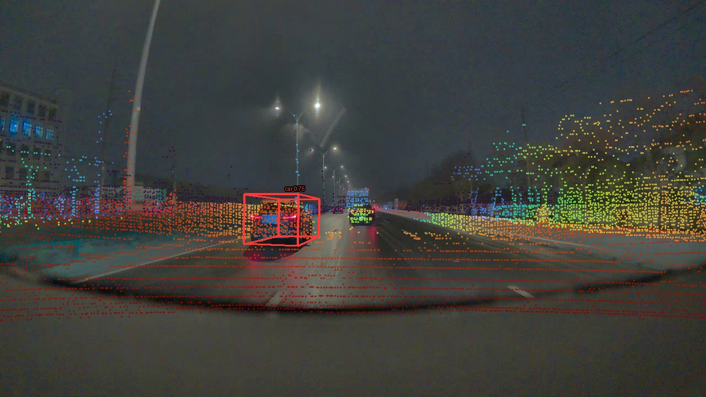
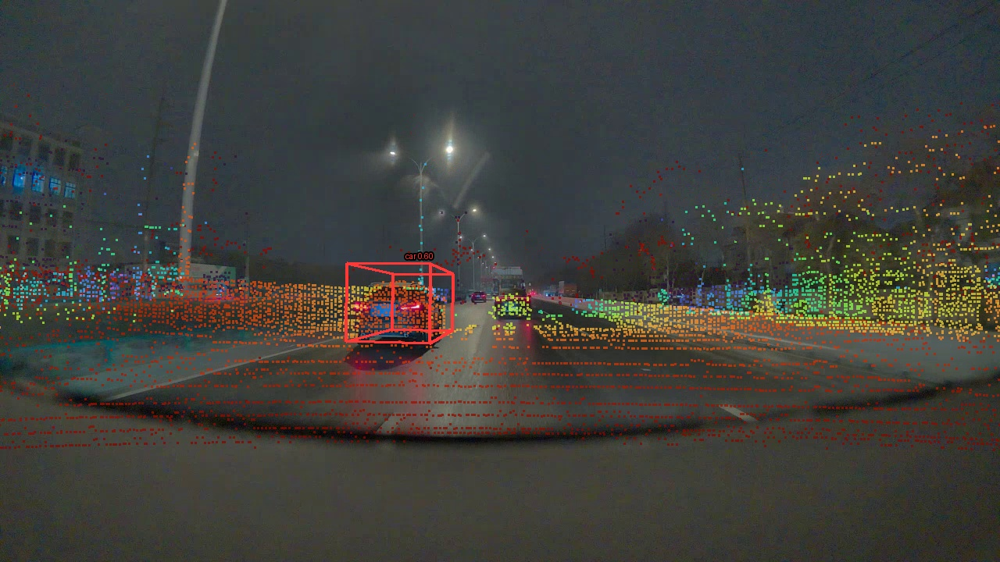
IMPLEMENTATION & EVALUATION
RangeLDM 将点云投影为距离与强度图；有效返回受 2 m 与 50 m 边界约束，空值使用 sentinel。原始回波 mask 与邻域填充值分别保留。
默认主干为 28 个 Transformer block、4096 hidden channels，使用 2×2 空间 patch 和 7 个视角槽；视角嵌入和条件 mask 在 patch 前拼入。
可从距离图、回波 mask 和回投点云评估距离误差、有效回波与点云距离；结果须标明有效范围、参考数据和评估口径。
页面描述基于项目材料与当前仓库的静态阅读，不代表已在此环境复现实验。当前标准 CLI 的单帧 Gaussian 输出路径未调用已加载的 raydrop UNet；多帧、新位姿和实车指标需使用对应配置、权重与数据另行验证。
查看方法流程、张量形状和训练细节。
LIMITATIONS & DESIGN CHOICES
夜间光照不足与高速运动模糊会影响相机条件质量；时序一致性和跨模态推理效率仍需继续研究。
远处建筑和植被可能缺失或失真。 下方为该场景的六路相机输入和真实 / 生成点云。
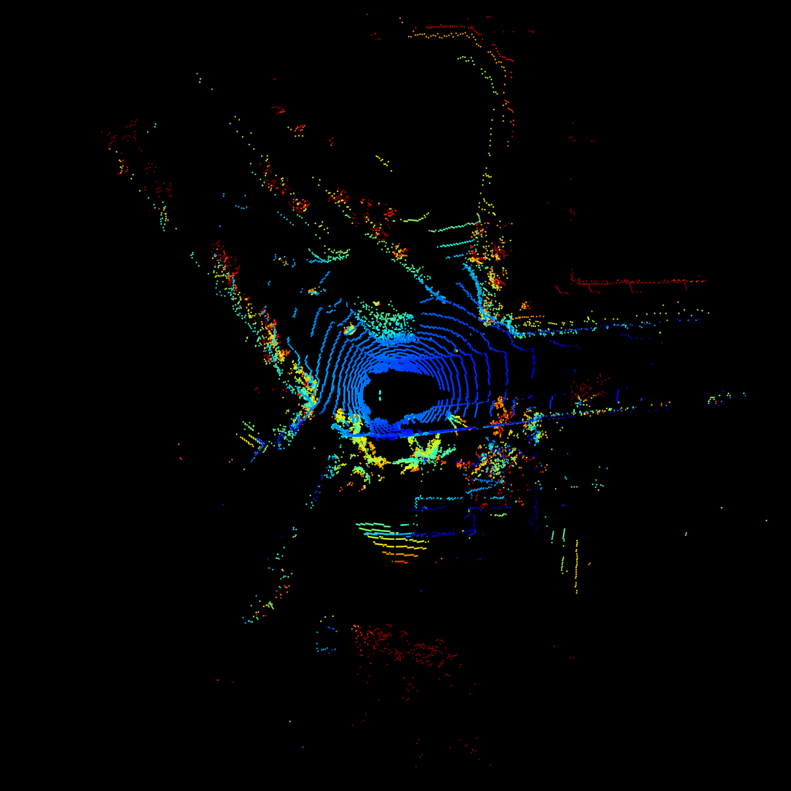

LiDAR 观测除了几何距离，还涉及强度、回波概率和按光束采样的稀疏返回。单独的相机深度预测并不自动提供这些传感器属性；不同方法也可能通过额外模块进行适配。
方案将 2DGS 作为局部表面表达，并结合 GS-LiDAR 渲染逐光束结果。其效果依赖数据、参数化与对比设置，不能视作在所有任务上都优于 3DGS。
压缩后空间位置更少，有助于降低序列长度和计算、显存需求；但生成质量与效率仍需结合实际模型、硬件及实验验证。
相机观测更常见、更易获取。该选择不意味着 occupancy 无效；不同条件输入具有不同的数据、几何和部署要求。
时序与新视角一致性、跨模态推理效率、纯相机数据接口以及不同传感器的标定和评估合同仍需验证。项目材料中的 200 m 量程不适用于此页 nuScenes 的 50 m 配置。
LIFTER / TECHNICAL SUMMARY
LiFTeR / LiDARGen
回到顶部